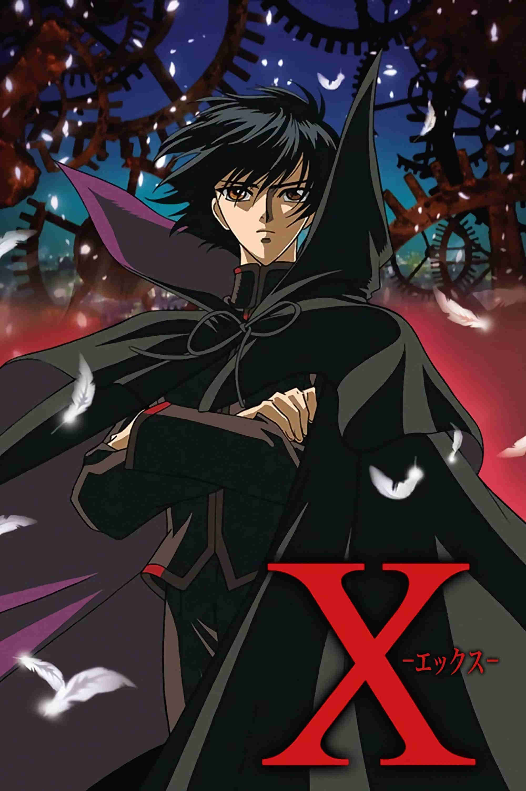

| X (Clamp) | |
|---|---|
| Trailer | Original Poster |
|  | |
|
- Plot : The story takes place at the end of the days, in the year 1999.
It follows Kamui Shiro, a young esper who returns home to Tokyo after a six-year absence to face his destiny as the one who will determine humanity's fate. There, he discovers two organizations who want to take him as well as another person who shares Kamui's same talent. - Episodes : 24 (+1 OVA) - Genre : Dark Fantasy - Directed by : Yoshiaki Kawajiri - Music by : Naoki Satō - Running time : 24min (x24) - Production : Madhouse animation studio - Release date : 3 October 2001 > 27 March 2002 |
|